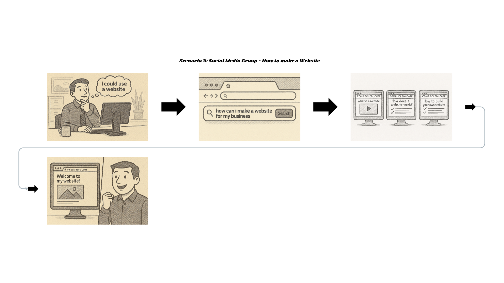

About me

I am a driven student passionate about IT and cybersecurity, dedicated to continual
learning and skill-building. My mission is to leverage my expertise in software development, AI,
and ethical hacking to solve complex challenges, learn, and contribute to a safer digital world.
My resume: PDF version
| HTML version
Skills
Some of my best skills and areas of interest are: Complex problem solving, Python, Java, cybersecurity, IT & system administration, and ethical hacking.
Projects
Problem Statement:

Basic computer and computer science education is not accessible to the general public.
Solutions Affinity Diagram

This is a diagram grouping 20 possible solutions to the problem into 5 clusters.
The clusters are social media, clubs/organizations, community outreach, businesses,
education reform. There are many possible solutions and they all have upsides and downsides.
I wanted to focus on educating the general public regardless of their social status.
Sketches

These are a few sketches of my solution to the problem: some sort of social media group or page.